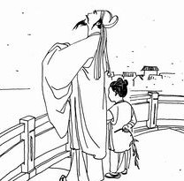

孟浩然前半生主要居家侍亲读书，以诗自适。曾隐居鹿门山。40岁游京师，应进士不第，返襄阳。在长安时，与张九龄、王维交谊甚笃。有诗名。后漫游吴越，穷极山水，以排遣仕途的失意。因纵情宴饮，食鲜疾发而亡。孟浩然诗歌绝大部分为五言短篇，题材不宽，多写山水田园和隐逸、行旅等内容。虽不无愤世嫉俗之作，但更多属于诗人的自我表现。他和王维并称，其诗虽不如王诗境界广阔，但在艺术上有独特造诣，而且是继陶渊明、谢灵运、谢眺之后，开盛唐田园山水诗派之先声。孟诗不事雕饰，清淡简朴，感受亲切真实，生活气息浓厚，富有超妙自得之趣。如《秋登万山寄张五》、《过故人庄》、《春晓》等篇，淡而有味，浑然一体，韵致飘逸，意境清旷。孟诗以清旷冲澹为基调，但冲澹中有壮逸之气，如《望洞庭湖赠张丞相》“气蒸云梦泽，波撼岳阳城”一联，精力浑健，俯视一切。但这类诗在孟诗中不多见。
盛唐诗韵，以介绍唐朝数位著名典型诗人为主题的一个网页作品。本站以黑白简约典雅的风格设计主要介绍到了唐朝诗人李白、杜甫、王维、贺知章、孟浩然等。有什么不足之处欢迎大家批评指出！
- 
孟浩然，字浩然.
唐代诗人，孟子第33代。少好节义，喜济人患难，工于诗。年四十游京师，唐玄宗诏咏其诗，至“不才明主弃”之语，玄宗谓：“卿自不求仕，朕未尝弃卿，奈何诬我？”